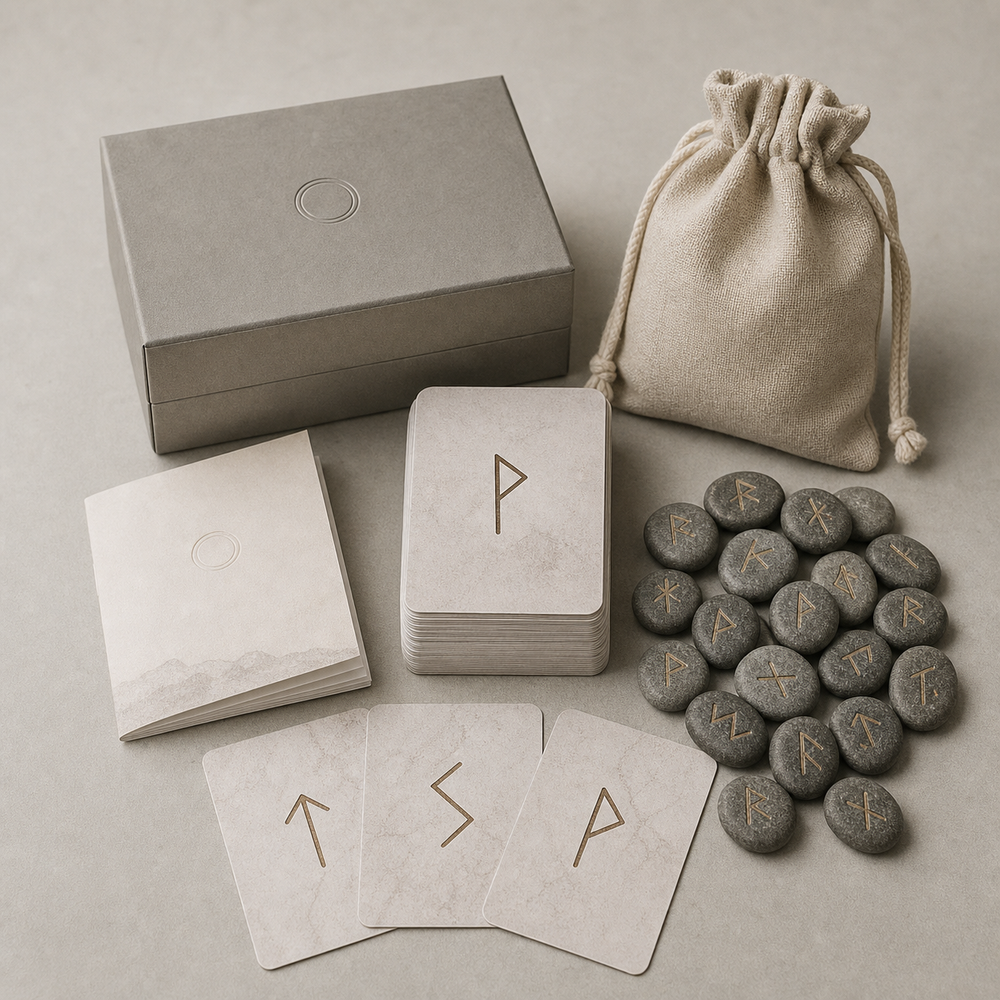

질문을 입력하고 스프레드를 선택하면 결과지가 여기에 표시됩니다.
Start Here
처음 온 사람이 바로 궁금해하는 것
Reading Engine
질문을 정하고 룬을 뽑으세요
룬스의 기본 리딩은 역방향을 사용하지 않습니다. 먼저 질문을 한 문장으로 세우고, 선택한 스프레드에 따라 뽑힌 룬의 기본 상징을 읽습니다. 종합 해석은 운영 환경에서 LLM API와 연결해 더 자연스러운 결과지로 확장합니다.
Rune Store
판매 공간은 먼저 열어두고, 상품은 차차 채웁니다
초기 상품은 실물 룬스톤, 왕초보 해설서, 프리미엄 PDF, 영상 강의 순서로 확장합니다. 지금 MVP에서는 상품 카테고리와 구매 동선만 먼저 잡아둡니다.
Physical Kit
실물 키트와 QR 해설지
룬스는 단순한 정보 사이트가 아니라 실물 룬스톤을 산 사람이 다시 찾아오는 학습 허브를 목표로 합니다. 각 키트에는 QR 코드를 연결해 웹 해설, PDF 결과지, 영상 가이드로 확장할 수 있습니다.
- 24 엘더 푸사르크 기본, 빈 룬은 별도 옵션으로 분리
- 역방향은 기본 리딩에서 제외하고, 칼럼에서 현대 관습으로만 설명
- 상품 이미지는 자체 촬영 또는 자체 생성 이미지로 운영
- 배송, 구성품, 환불 기준을 상품 페이지에서 명확히 고지

Database